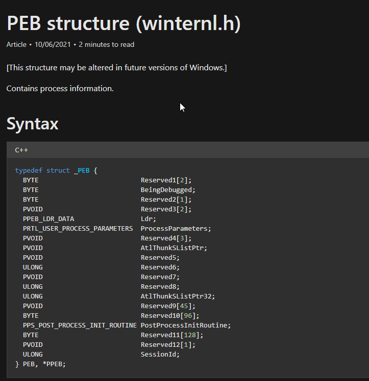

jesus no videos to visualize shit
The functions in ntdll.dllthat make the syscalls consist of just a few assembly instructions, so re-implementing themin your own implant can bypass
SysWhispers2
- SysWhispers2 can generate Heders capable of making direct system calls
- can generate a Header/ASM file for any system call in the core kernel image (ntoskrnl.exe), which also contains the necessary type definitions.
- Technology Introduction
- Various security products place hooks in user-mode API functions, which allow them to redirect execution data flow to their engines and detect suspicious behavior.
- The functions in ntdll.dllthat can perform system calls consist of only a few assembly instructions,
- so we can reimplement them in our own porting program to bypass the hooks set by these security products.
# Export compatible with all versions of NtProtectVirtualMemory and NtWriteVirtualMemory- PS C:\Projects\SysWhispers2>py .\syswhispers.py --functions NtProtectVirtualMemory,NtWriteVirtualMemory -o syscalls_mem
# export common functions - PS C:\Projects\SysWhispers2> py .\syswhispers.py --preset common --out-file syscalls_common
- # Export all compatible functions for all supported Windows OS versions (see the example-output/ directory for details)
- PS C:\Projects\SysWhispers2>py .\syswhispers.py --preset all -o syscalls_all
this doesn’t call RtlGetVersionto query the OS version, but instead does this in the assembly by querying the PEB
